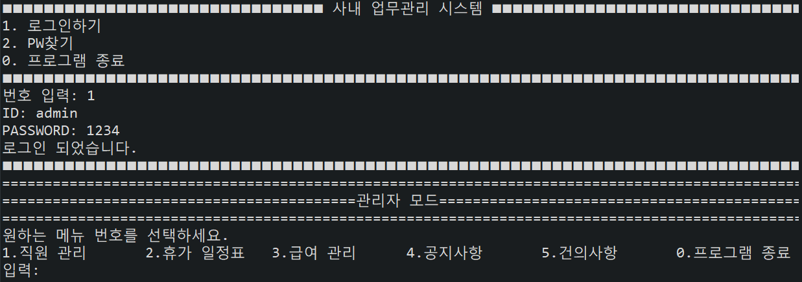

| 데이터 파일 | 상세내용 |
|---|---|
| 건의사항.txt | 사용자/관리자가 작성 및 수정한 건의사항을 관리하는 데이터 파일 |
| 공지사항.txt | 사용자/관리자가 작성 및 수정한 공지사항을 관리하는 데이터 파일 |
| 부서.txt | 회사에 속한 모든 부서를 각 팀별로 저장하는 데이터 파일 |
| 직급별 급여.txt | 회사 직급별 연봉급여를 관리하는 데이터 파일 |
| 휴가신청명단.txt | 사용자의 휴가 신청시 관리자가 관리하는 데이터 파일 |
| 퇴사신청명단.txt | 사용자의 퇴사 신청시 관리자가 관리하는 데이터 파일 |
| 사원 상태.txt | 모든 사용자의 현재 상태를 관리하는 데이터 파일 |
| 사용자 정보.txt | 모든 사용자의 개인정보를 관리하는 데이터 파일 |
| 근태기록\날짜별\월별 해당년도-해당월-해당일.txt |
YYYY-MM-DD 하루하루 기록되는 근태기록을 관리하는 데이터 파일 |
| 캘린더일정_부서별\ 부서별일정_각팀이름.txt |
회사에 속한 모든 부서의 일정을 각 팀별로 구분지어 관리하는 데이터 파일 |